1. Original Wisdom chat: insights in charts
A render of the original Wisdom answer to “i want a set of descriptive insights about this business, in charts”: four charts, then the business takeaways.

2. Chat answer without charts
A render of the Wisdom answer to “i want a set of descriptive insights about this business, not charts”: KPI tiles and nine text-only findings.
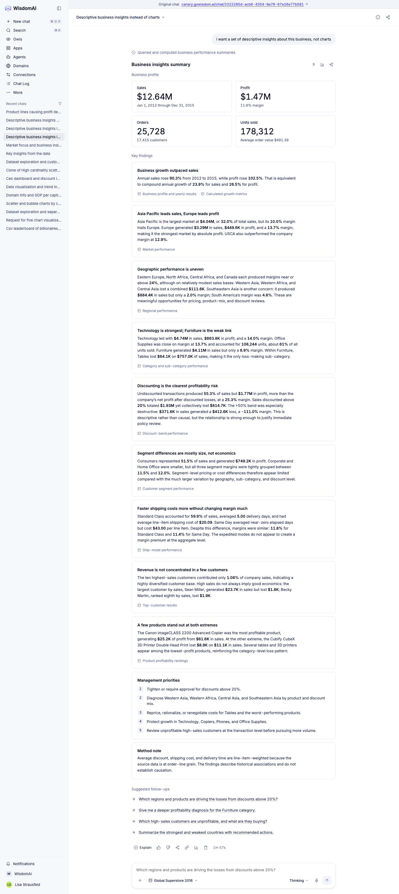
3. Redesigned chat answer with charts
The redesign: the same findings as screen 2, each with its chart in the same card.
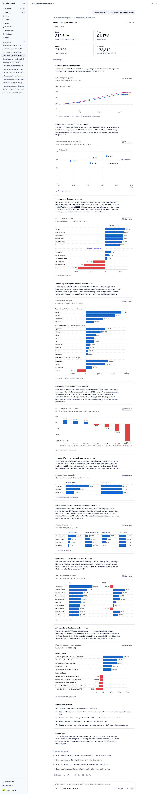
4. Redesign with expandable charts
The same nine findings as screen 3, with charts collapsed. Click a finding to show or hide its chart.
Annual sales rose 90.3% from 2012 to 2015, while profit rose 102.5%. That is equivalent to compound annual growth of 23.9% for sales and 26.5% for profit.
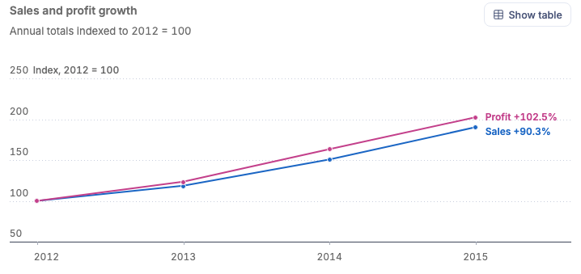
Asia Pacific is the largest market at $4.04M, or 32.0% of total sales, but its 10.0% margin trails Europe. Europe generated $3.29M in sales, $449.6K in profit, and a 13.7% margin, making it the strongest market by absolute profit. USCA also outperformed the company margin at 12.9%.
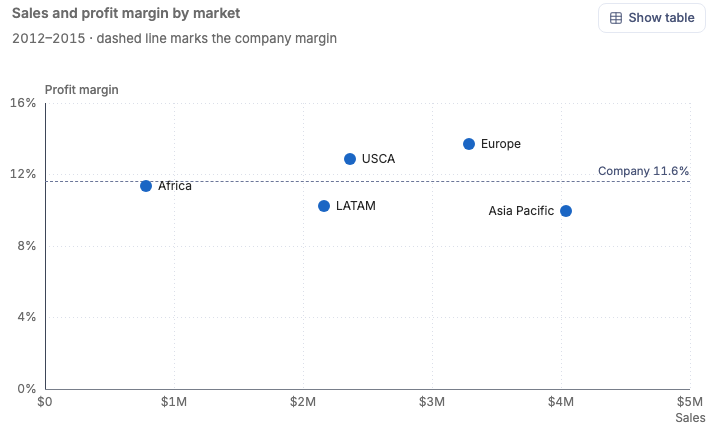
Eastern Europe, North Africa, Central Africa, and Canada each produced margins near or above 24%, although on relatively modest sales bases. Western Asia, Western Africa, and Central Asia lost a combined $111.6K. Southeastern Asia is another concern: it produced $884.4K in sales but only a 2.0% margin; South America’s margin was 4.6%. These are meaningful opportunities for pricing, product-mix, and discount reviews.
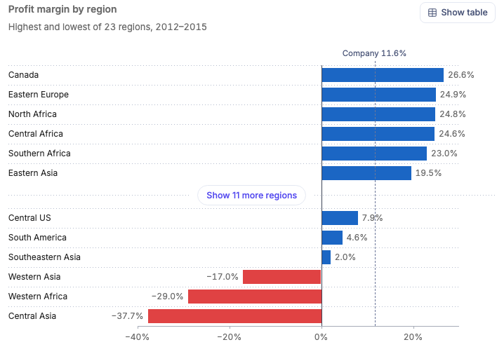
Technology led with $4.74M in sales, $663.8K in profit, and a 14.0% margin. Office Supplies was close on margin at 13.7% and accounted for 108,244 units, about 61% of all units sold. Furniture generated $4.11M in sales but only a 6.9% margin. Within Furniture, Tables lost $64.1K on $757.0K of sales, making it the only loss-making sub-category.
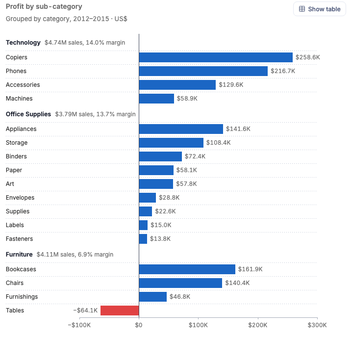
Undiscounted transactions produced 55.3% of sales but $1.77M in profit, more than the company’s net profit after discounted losses, at a 25.3% margin. Sales discounted above 20% totaled $1.93M yet collectively lost $814.7K. The >50% band was especially destructive: $371.6K in sales generated a $412.6K loss, a -111.0% margin. This is descriptive rather than causal, but the relationship is strong enough to justify immediate policy review.
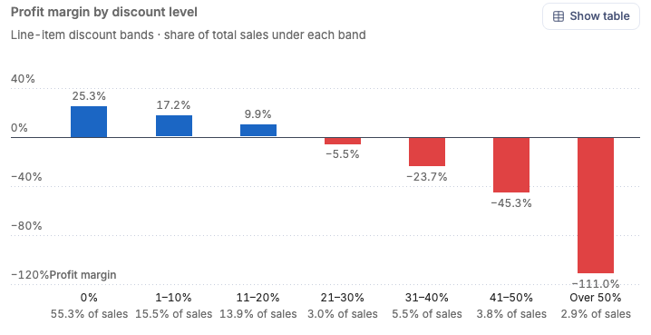
Consumers represented 51.5% of sales and generated $749.2K in profit. Corporate and Home Office were smaller, but all three segment margins were tightly grouped between 11.5% and 12.0%. Segment-level pricing or cost differences therefore appear limited compared with the much larger variation by geography, sub-category, and discount level.
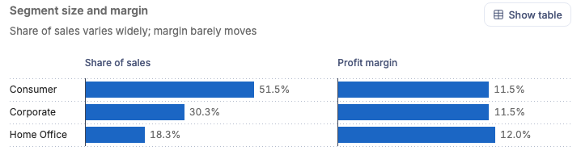
Standard Class accounted for 59.9% of sales, averaged 5.00 delivery days, and had average line-item shipping cost of $20.09. Same Day averaged near-zero elapsed days but cost $43.00 per line item. Despite this difference, margins were similar: 11.8% for Standard Class and 11.4% for Same Day. The expedited modes do not appear to create a margin premium at the aggregate level.
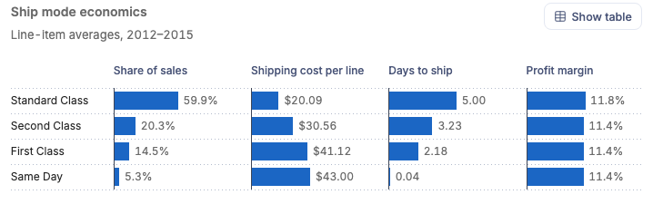
The ten highest-sales customers contributed only 1.08% of company sales, indicating a highly diversified customer base. High sales do not always imply good economics: the largest customer by sales, Sean Miller, generated $23.7K in sales but lost $1.8K; Becky Martin, ranked eighth by sales, lost $1.9K.
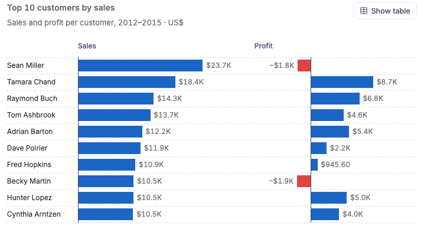
The Canon imageCLASS 2200 Advanced Copier was the most profitable product, generating $25.2K of profit from $61.6K in sales. At the other extreme, the Cubify CubeX 3D Printer Double Head Print lost $8.9K on $11.1K in sales. Several tables and 3D printers appear among the lowest-profit products, reinforcing the category-level loss pattern.
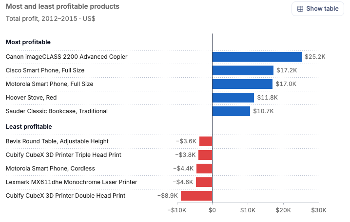